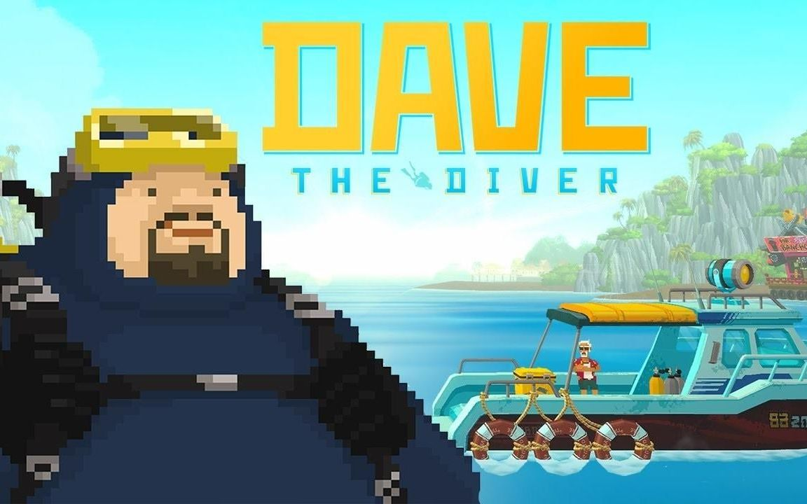
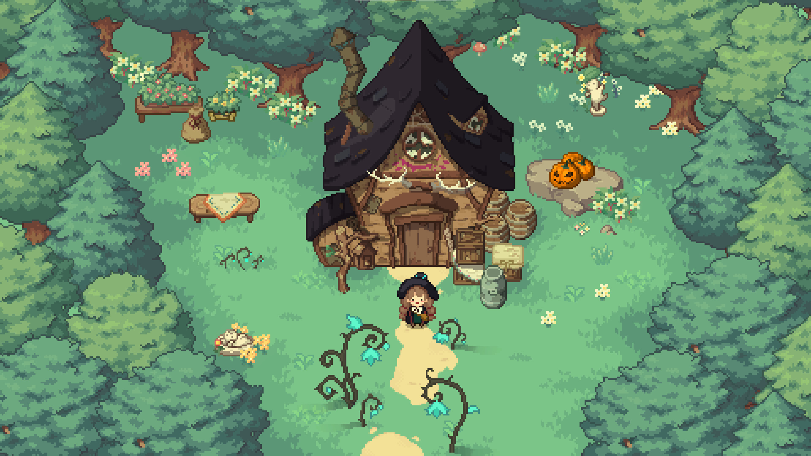
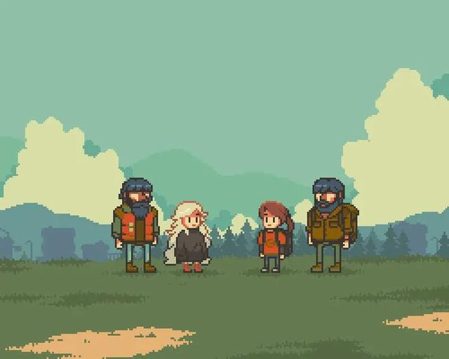
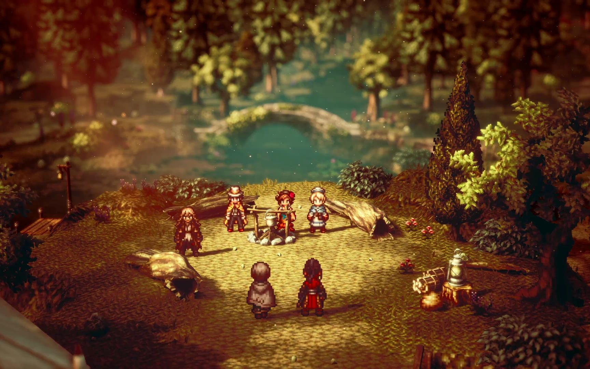

潜水员戴夫

潜水员戴夫是一款很难用某一种特定类型去定义的游戏，玩法看似很简单：你需要扮演这位名叫戴夫的胖胖潜水员，和黑人好友班乔一起经营一家寿司店，大部分时间里你需要下潜到海里，深入蓝洞探索广阔的海洋，再顺便捕捕鱼。晚上则是在店里干点杂活，和大厨好友一起经营寿司店。
海洋探险不光有丰富的鱼类和美景,戴夫还需要关注自己的氧气量,避免因为氧气耗尽无法回到岸上。同时,还会时不时遇到其他危险,偶尔真的会被各种奇形怪状的深海鱼吓到❗这款游戏不光光只有海底探险这么简单,随着剧情的发展,你会遇到各种各样的NPC,形形色色的人物角色各有性格
与故事。
start
林中小女巫

林中小女巫是一款俯视角的像素解密探险类游戏，游戏中玩家将扮演可爱但还有点淘气的小女巫艾莉，阴差阳错误入了女巫小屋，又结识了森林中的小狐狸，顺着小狐狸这条线来到了森林深处的村庄，这里已经变得荒芜和破败，于是决定动用自己魔女的力量，帮助这里进行重建的故事。
虽然是在森林中，但这里并没有险象环生的战斗等待着我们，玩家要做的，就是探索森林的各个角落，寻找各种资源和材料。这些材料可以制作出各种药剂出来完成游戏中的主线任务与新的地图，同时也支持售卖换钱。在这个过程中我们也会和村民们建立更深层的羁绊。
start
风来之国

风来之国是一款精致迷人的冒险游戏，来自上海的独立团队皮克皮创作。遥远的未来，世界在灾难中分崩离析，仅存的文明奄奄一息。神秘的灾害在大地上横行，摧毁吞噬遭遇它的一切。幸运的人躲进了地下，从此与世隔绝，我们故事从这里开始。
那是一个勤奋的矿工和那个神秘的女孩，命运和未知的世界正在呼唤着他们。逃离地下小镇的二人组，将在风来之国开始他们激动人心的冒险。乘上火车，穿越这个世界，遇见美丽的风景和村庄，结识新的伙伴。
start
歧路旅人

《八方旅人》是由Square
Enix制作发行的一款像素风格的JRPG,在怀旧的像素风格基础上加入了唯美的光影特效,使画面看起来在复古的同时又相当漂亮。玩家需要从八位旅行者中选择一位角色进行冒险,他们有着不同的出身不同的能力和目的,
以各种各样的视角来观察和感受这个世界。游戏的战斗系统采用回合制，玩家需要根据敌人的弱点和属性选择不同的攻击策略。每个角色都有自己的技能和属性，玩家需要根据实际情况合理搭配和运用角色的能力来应对不同的敌人。
start